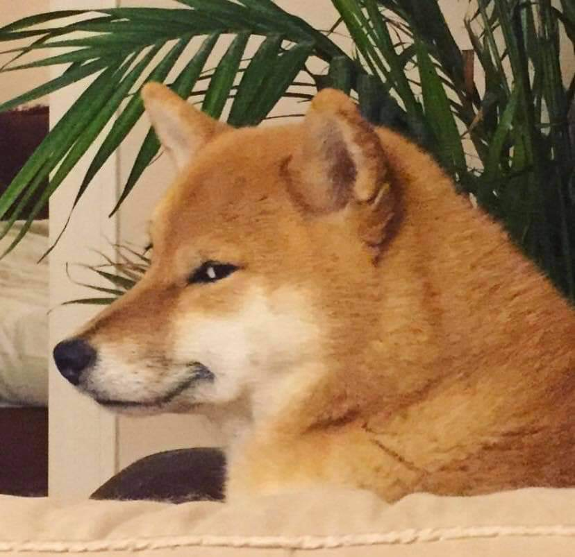

El Shiba Inu es un perro robusto de tamaño mediano, tipo Spitz (orejas erguidas, pelaje grueso y cola enroscada) y es una versión reducida del Akita. Los machos adultos miden alrededor de 39,5 cm y las hembras, 36,5 cm.
El shiba inu japonés es un perro atento, activo y amistoso que puede ser bastante independiente y que suele tener un fuerte instinto de caza. Una socialización concienzuda y temprana es básica para ayudarlo a ser sociable con otros perros. Un rasgo característico de la raza es el «grito shiba», una vocalización muy aguda que emite cuando está emocionado o agitado.
Criado para cazar y hacer salir a la caza menor en las montañas de Japón, el shiba inu es una versión pequeña del akita (de hecho, este nombre significa «perro pequeño»). Se sabe que es una de las razas más antiguas de Japón, que se remonta al siglo III a. C. El shiba inu estuvo a punto de desaparecer por completo en la Segunda Guerra Mundial, pero para recuperar la raza se utilizaron los pocos perros que sobrevivieron a los ataques aéreos y a una epidemia de moquillo.